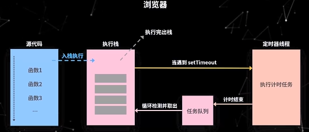

事件循环就是在事件驱动模式中用来管理和执行事件的一套流程
前言
我们都知道，javascript从诞生之日起就是一门单线程的非阻塞的脚本语言。这是由其最初的用途来决定的：与浏览器交互。
单线程意味着，javascript代码在执行的任何时候，都只有一个主线程来处理所有的任务。
而非阻塞则是当代码需要进行一项异步任务（无法立刻返回结果，需要花一定时间才能返回的任务，如I/O事件）的时候，主线程会挂起（pending）这个任务，然后在异步任务返回结果的时候再根据一定规则去执行相应的回调。
单线程是必要的，也是javascript这门语言的基石，原因之一在其最初也是最主要的执行环境——浏览器中，我们需要进行各种各样的dom操作。试想一下 如果javascript是多线程的，那么当两个线程同时对dom进行一项操作，例如一个向其添加事件，而另一个删除了这个dom，此时该如何处理呢？因此，为了保证不会 发生类似于这个例子中的情景，javascript选择只用一个主线程来执行代码，这样就保证了程序执行的一致性。
当然，现如今人们也意识到，单线程在保证了执行顺序的同时也限制了javascript的效率，因此开发出了web worker技术。这项技术号称让javascript成为一门多线程语言。
然而，使用web worker技术开的多线程有着诸多限制，例如：所有新线程都受主线程的完全控制，不能独立执行。这意味着这些“线程” 实际上应属于主线程的子线程。另外，这些子线程并没有执行I/O操作的权限，只能为主线程分担一些诸如计算等任务。所以严格来讲这些线程并没有完整的功能，也因此这项技术并非改变了javascript语言的单线程本质。
可以预见，未来的javascript也会一直是一门单线程的语言。
话说回来，前面提到javascript的另一个特点是“非阻塞”，那么javascript引擎到底是如何实现的这一点呢？答案就是今天这篇文章的主角——event loop（事件循环）。
事件驱动机制
浏览器异步执行的原理背后其实是一套事件驱动的机制。
事件触发，任务选择和任务执行都是由事件驱动机制来完成的。
Node JS 和浏览器的设计都是基于事件驱动的。
在事件驱动中，当有事件触发后，被触发的事件会按顺序暂时存在一个队列中，等待 JS 的同步任务执行完成后，就会从这个队列中取出要处理的事件并进行处理。
浏览器环境下 JS 引擎的事件循环机制
JS 引擎本身不实现事件循环机制，而是由它的宿主实现的。
浏览器中的事件循环主要是由浏览器来实现的。
JS是单线程的。为什么浏览器可以同时执行异步任务呢？
因为浏览器是多线程的，当JS需要执行异步任务的时候，浏览器会另外帮我们启动一个线程去执行该任务。
JS是单线程的：即执行JS代码的线程只有一个，是浏览器提供的 JS引擎线程(主线程)
浏览器中还有定时器线程和 Http 请求线程等这些线程不是用来执行JS的，而是去执行浏览器的一些其他任务的。
比如说主线程需要发送一个 Ajax 请求，就把这个任务交给 Http 请求线程去真正地发送这个请求，等待请求回来之后再将
callback 里需要执行的 JS 回调交给主线程去执行。也就是说，浏览器才是真正执行发送请求这个任务的角色。而 JS 只是
负责执行最后的回调处理。
所以这里的异步不是 JS 自身实现的，其实是浏览器为其提供的能力。
多线程是 JS 异步任务的一个明显特征。
执行栈和任务队列
JS 在解析一段代码的时候，会将同步代码按顺序排在执行栈中，然后依次执行里面的函数。
当遇到异步任务的时候，就交给其他线程处理。等待当前执行栈所有同步代码执行完成后，它会从一个队列中去取出已完成的异步任务的回调，加入执行栈继续执行。遇到异步任务又交给其他线程。通过这样一个循环来执行完整个代码。

JS 按顺序执行执行栈中的方法，每次执行一个方法的时候，会为这个方法生成一个独有的执行环境，即上下文 context。
等待这个方法执行完成后，就会销毁当前的执行环境，并且从执行栈中弹出此方法，也就是消费完成。然后又继续调用下一个方法。
由此可见，在事件驱动的模式下，至少包含了一个执行循环来检测任务队列是否有新的任务，而通过不断循环去取出异步回调来执行，这个过程就是我们说的事件循环。
而每一次循环其实就是一个事件周期或称为一个 tick。
宏任务和微任务
根据任务的种类不同，任务队列可以分为微任务（micro task）队列和宏任务（macro task）队列。
在事件循环的过程中，执行栈在同步代码执行完成之后，优先会去检查微任务队列是否有任务需要执行，如果没有，再去宏任务队列检查是否有任务执行，如此往复。
微任务一般在当前循环就会优先执行，而宏任务会等到下一次循环开始的时候执行。
因此微任务会比宏任务先执行，微任务只有一个队列，宏任务队列可能有多个。
宏任务有定时器任务，请求任务，常见的点击，按下等事件也是属于宏任务的。
常见的宏任务有setTimeout()、setInterval、setImmediate、I/O、用户交互操作，UI渲染
常见的微任务有promise.then()、promise.catch()、new MutationObserver、process.nextTick()
示例
1 | console.log('同步代码1') |
输出顺序为
1 | 同步代码1 |
由此我们可以得出一个结论：promise.then和setTimeout都是异步执行的，将在所有同步代码执行完之后执行。
浏览器中
setTimeout设置为0，会默认为4毫秒，Node JS中默认最小为1毫秒。所以此处虽然promise.then写在后面，但执行顺序是比setTimeout优先的。
new Promise是同步执行的，promise.then里面的回调才是异步的
（争议）也有人这样去理解，微任务是在当前事件循环的尾部去执行，宏任务是在下一次事件循环的开始去执行，这么理解也没有太大的问题。
上述代码在执行到promise.then的时候，V8 引擎不会将这个异步任务交给浏览器其他线程，而是直接将回调存在自己的一个队列中，等待当前执行栈执行完成后，就立马去执行promise.then存放的队列。promise.then微任务并没有多线程参与。
从某些角度来说，微任务不能完全算是异步任务，因为它只是将我们书写代码的顺序修改了，就是把它放到我们其他代码的最后面去执行而已。
setTimeout 有“定时等待“任务，需要定时器线程执行
Ajax有“发送请求”任务，需要 HTTP 线程执行
promise.then没有任何异步任务需要其他线程执行，只有回调
宏任务和微任务的本质区别
- 宏任务有明确的异步任务需要执行和回调，需要其他异步线程支持
- 微任务没有明确的异步任务需要执行，只有回调，不需要其他异步线程支持。
定时器误差
在事件循环中我们知道，总是先执行同步代码，然后才回去任务队列当中取出异步回调来执行。
当执行setTimeout的时候，浏览器启动新的线程去计时，计时结束后触发定时器事件将回调存入宏任务队列，等待 JS 主线程空了的时候取出并执行。如果 JS 主线程仍然在执行同步任务的过程，那么此时的宏任务只能挂起，这就造成了计时器不准确的问题。因此，同步代码耗时越长，计时器的误差就会越大。
由于微任务是优先于宏任务执行的，如果微任务也有耗时操作的话，也会影响宏任务的准确性。
如果同步代码中有死循环，或者微任务中在不断地递归调用其他微任务，那么宏任务中的代码可能永远得不到执行。
所有主线程代码的执行效率提升是一件很重要的事情。（性能优化点）
微任务循环执行结束之后，即一次事件循环结束之后，浏览器会执行视图渲染，浏览器可能会合并多次事件循环的结果做一次视图重绘。因此，视图更新是在事件循环之后，所以并不是每一次操作 DOM，都一定会立马刷新视图。
视图重绘之前会执行requestAnimationFrame回调（既不属于宏任务，也不属于微任务）
async / await
示例
1 | async function async1() { |
这段代码多了 async/await 只要我们弄懂这个异步处理的原理，就可以知道它们的执行顺序了。
async/await： 这哥俩个其实是 Promise 和 Generator 的语法糖，所以我们把它们转成我们熟悉的 Promise
1 | async function async1() { |
那我们在看看转换后的整体代码
1 | async function async1() { |
输出结果如下
1 | /** |
Node JS中 JS 引擎的事件循环机制
todo 学习Nodejs
- 循环 + 任务队列的流程
- 微任务优先于宏任务
相对浏览器有一些差异，并且新增了一些任务类型和任务阶段
参考
详解JavaScript中的Event
20分钟搞定JavaScript事件循环
面试一定会问到的-js事件循环
If you like this blog or find it useful for you, you are welcome to comment on it. You are also welcome to share this blog, so that more people can participate in it. If the images used in the blog infringe your copyright, please contact the author to delete them. Thank you !